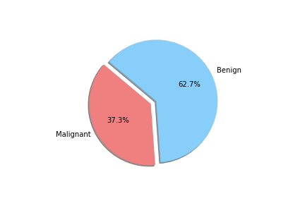
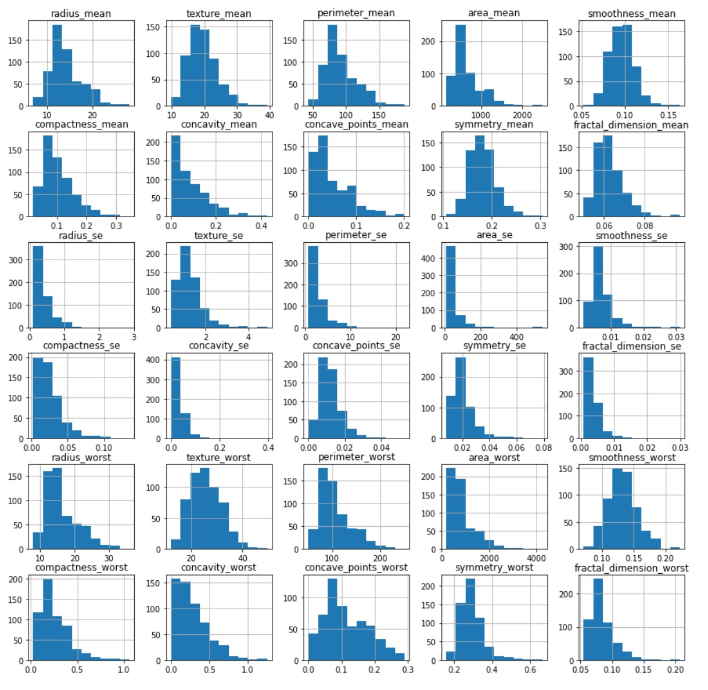

When unpacking the data from the Wisconsin Breast Cancer dataset, we found that it had a couple of concerns. First was the fact that the data was not evenly sampled between classes. There were significantly more Benign samples than Malignant which can lead to a bias in the training. Second we found that many of the features data were not normally distributed. That may have an effect on some of the classification algorithms due to the underlying assumption of normally distributed data. We decided to see if we could balance the sample class sizes to give better results on a few of the models. We did not deal with the feature skewness though. It may be that when we transform and scale the data, it is less skewed, though we did not explore this due to time constraints. Also for use later in this study we looked at the breakdown of the data in terms of how each feature data was split between classes and plotted the results. These showed us that how separated the data was by feature. We counted 11 strongly separated features, 10 weakly separated and 9 unseparated features. We use this as a later guide. Lastly we saw that all the data was positively valued and so we went with the min-max scaler to try and eke out better results.
To achieve this score we loaded the dataset into a Jupyter Notebook and cleaned the data so that diagnosis was no longer categorical and dropped the ID column.
We took a look at the data through a histogram to observe whether or not the data was evenly distiubuted as this would hamper certain models.
A strong right skew was observed which told us that for some models tweaks to the data would be needed for them to run effciently.
Another issue was that when we looked at the difference between benign and malignant in some there was either a lot of overlap or very little.
We then split the data into 3 seperate dataframes that could be tested for different results.
The first was our whole dataframe with no tweaks made as the control.
The second was a dataframe that had just as many benigns as malignants to see if an even training and test would make for better results.
The third was a dataframe skewed towards malignant to see if we could reduce False Negatives.
The datasets were then split into their training and testing splits and a MinMax Scaler was used as all our values were more than 0.
We did test 2 different classifiers and found that they thought we had 3 classes, and that most of our data could be explained in 15 variables.
We ran through the models and found that our top performers tended to be Random Forest Classifiers, Neural Networks, and Logistic Regression.
A confusion matrix was ran on these models to help reduce the amount of False Negatives, the False Negative rate for Random Forest Classifiers was 3%, the False Negative rate for the Neural Network was 0%, and the False Negative rate for the Logistic Regression was 3%.
The Neural Network also had a slightly higher accuracy of 99.4% compared to the 97.18% of the Random Forest Classifier.
In conclusion we think that a Neural Network that has been properly tuned and biased towards elimanating False Negatives would be the most useful for Breast Cancer detection in tumors.
In the future, we would like to see if we could make a neural network model with 3 outputs to see if we can get all the misdiagnosed cases into one bucket. The idea being to have all the uncertainty put in a small set that can be further tested and evaluated while getting the rest of the data through at 100%.